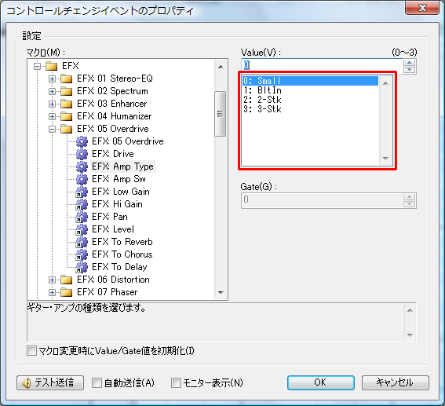

Sound Source Definition File Specifications
A sound source definition file is a file that defines the tone names and various setting methods of the sound source.
Domino operates the sound source based on this definition file.
Sound source definition files are stored in the "Module" folder in the same location as Domino.exe.
When creating your own sound source definition file or when you have received one from elsewhere, please create or copy it into this folder.
Create one file per sound source.
(Usually, multiple sound sources are not defined in a single file.)
The sound source definition file is written in XML (Extensible Markup Language) format.
(Tags are used like in HTML.)
The main structure of the definition file is as follows.
(Tabs and blank lines may be freely inserted.)
Simply fill in the parts written in parentheses to complete the definition file.
Each part will be explained below.
The basic information of the sound source and the definition file is written as attributes of the ModuleData tag.
Example)
<ModuleData Name="SC-8850" Folder="Roland" Priority="100" FileCreator="Takabo Soft" FileVersion="1.00" WebSite="http://takabosoft.com/">
The attributes of the ModuleData tag are as follows.
(Attribute names and tag names are case-insensitive. Also, the order of attributes is arbitrary.)
| Attribute |
Default |
Meaning |
| Name |
Required |
Specifies the sound source name. |
| Folder |
|
On the screen for selecting a sound source in Domino, enters the folder specified here. |
| Priority |
100 |
Specifies the priority (order) within the same folder. The smaller the value, the earlier the order. |
| FileCreator |
|
Specifies the name of the creator of the definition file. |
| FileVersion |
|
Specifies the version of the definition file. If you modify the definition file, it is recommended to increase the version number. |
| WebSite |
|
Specifies the distribution site or home page of the definition file. |
The creator name and version information of the definition file can be confirmed from [Sound Source File Definition Info] in the [Help] menu.
Several options can be specified as elements of the ModuleData tag.
Example)
<RhythmTrackDefault Gate="1" />
<ExclusiveEventDefault Data="f0h 41h 10h 42h f7h" />
<ProgramChangeEventPropertyDlg AutoPreviewDelay="0" />
<ControlChangeEventDefault ID="0" />
- RhythmTrackDefault tag
- Specifies the gate value of notes in the rhythm track with the Gate attribute.
- ExclusiveEventDefault tag
- Specifies the default data of the exclusive event with the Data attribute.
- ProgramChangeEventPropertyDlg tag
- Specifies the delay time until automatic preview on the [Program Change Event Properties] screen with the AutoPreviewDelay attribute (in milliseconds, default is 0).
Some MIDI devices take time to actually switch the tone after transmitting a program change. In that case, by specifying this delay time, the correct tone will sound during automatic preview.
- ControlChangeEventDefault tag
- Specifies the default ID at CC event insertion with the ID attribute.
Also, according to XML rules, for tags that do not need to be closed (those completed with a single tag), be sure to enter a space and a slash at the end of the tag.
Tone information has a three-level hierarchy of [Map], [PC], and [Bank].
Even if the sound source itself does not have banks, one bank is required per PC.
Example)
<Map Name="55Map">
<PC Name="Piano 1" PC="1">
<Bank Name="Piano 1" LSB="1" MSB="0" />
<Bank Name="Piano 1w" LSB="1" MSB="8" />
<Bank Name="Piano 1d" LSB="1" MSB="16" />
<Bank Name="Piano 2" LSB="1" MSB="126" />
<Bank Name="Acou Piano1" LSB="1" MSB="127" />
</PC>
<PC Name="Piano 2" PC="2">
<Bank Name="Piano 2" LSB="1" MSB="0" />
<Bank Name="Piano 2w" LSB="1" MSB="8" />
<Bank Name="Piano 2" LSB="1" MSB="126" />
<Bank Name="Acou Piano2" LSB="1" MSB="127" />
</PC>
</Map>
Map tag
The Map tag defines a map.
Multiple Map tags can be defined.
The Map tag can have multiple PC tags as elements.
The attributes of the Map tag are as follows.
| Attribute |
Default |
Meaning |
| Name |
Required |
Specifies the map name. |
PC tag
The PC tag defines PC information.
Multiple PC tags can be defined (it is not always necessary to define all 128).
The PC tag can have multiple Bank tags as elements.
The attributes of the PC tag are as follows.
| Attribute |
Default |
Meaning |
| Name |
Required |
Specifies the PC name (instrument name). |
| PC |
Required |
Specifies the PC number in the range of 1 to 128. |
Bank tag
The Bank tag defines bank information.
Multiple Bank tags can be defined (one bank per PC is required).
The attributes of the Bank tag are as follows.
| Attribute |
Default |
Meaning |
| Name |
Required |
Specifies the bank name (instrument name). |
| LSB |
|
Specifies the value to transmit as Bank Select LSB. If omitted, or 255 is specified, it will not be transmitted. |
| MSB |
|
Specifies the value to transmit as Bank Select MSB. If omitted, or 255 is specified, it will not be transmitted. |
Drum set information is almost the same as "
Instrument List Information", but multiple Tone tags can be defined as elements of the Bank tag.
Example)
<Map Name="55Map">
<PC Name="STANDARD" PC="1">
<Bank Name="STANDARD" LSB="1" MSB="0">
<Tone Name="High Q" Key="27" />
<Tone Name="Slap" Key="28" />
<Tone Name="Scr.Push" Key="29" />
<Tone Name="Scr.Pull" Key="30" />
<Tone Name="Sticks" Key="31" />
<Tone Name="Sq.Click" Key="32" />
<Tone Name="Mt.Click" Key="33" />
<Tone Name="Mt. Bell" Key="34" />
<Tone Name="Kick 2" Key="35" />
<Tone Name="Kick 1" Key="36" />
(Omitted)
</Bank>
</PC>
</Map>
Tone tag
The Tone tag defines the instrument name for each key of the drum set defined in the Bank tag.
Multiple Tone tags can be defined (optional).
The attributes of the Tone tag are as follows.
| Attribute |
Default |
Meaning |
| Name |
Required |
Specifies the instrument name. |
| Key |
Required |
Specifies the scale (note number) in the range of 0 to 127. |
The control change macro function is a function that pseudo-expands the control change function.
By defining macros, the user can perform various settings with the same sense as control change.
Such macro information is defined here.
Example)
<Folder Name="Sample">
<CCM ID="1" Name="PitchBend" Color="#0fa806" Sync="Last">
<Value Min="-8192" Max="8191" Offset="8192" />
<Memo>Changes the pitch.</Memo>
<Data>@PB #VH #VL</Data>
</CCM>
<CCM ID="161" Name="Dr:Level">
<Value />
<Gate Type="Key" />
<Memo></Memo>
<Data>@NRPN 1AH #GL #VL #NONE</Data>
</CCM>
<CCM ID="259" Name="Part Mode">
<Value Max="2">
<Entry Label="Normal" Value="0" />
<Entry Label="Drum1" Value="1" />
<Entry Label="Drum2" Value="2" />
</Value>
<Memo>Sets whether it is a normal instrument part or a drum set part.</Memo>
<Data>@SYSEX F0H 41H 10H 42H 12H [ 40H #1RCH 15H #VL ] F7H</Data>
</CCM>
<CCM ID="500" Name="TableTest" Color="#0fa806">
<Value Min="0" Max="3" TableID="1" />
<Memo>Table reference sample.</Memo>
<Data>@SYSEX (Omitted)</Data>
</CCM>
<CCMLink ID="500" Value="1" />
</Folder>
<Table ID="1">
<Entry Label="0ms" Value="0" />
<Entry Label="0.1ms" Value="1" />
<Entry Label="0.2ms" Value="2" />
<Entry Label="0.3ms" Value="3" />
</Table>
Folder tag
Each CCM tag can freely create folders and put them into them.
By doing so, it makes it easier for users to find the macro they are looking for.
The Folder tag defines that folder (not required).
The Folder tag can have multiple CCM tags and Folder tags as elements (if there are none at all, the folder will not be displayed ^^;).
The attributes of the Folder tag are as follows.
| Attribute |
Default |
Meaning |
| Name |
Required |
Specifies the folder name. |
| ID |
-1 |
Specify an ID of 0 or above when it is necessary to post a link as FolderLink. |
CCM tag
The CCM tag defines a control change macro (ControlChangeMacro).
Multiple CCM tags can be defined.
The CCM tag can have Value tags, Gate tags, Memo tags, and Data tags as elements.
The attributes of the CCM tag are as follows.
| Attribute |
Default |
Meaning |
| ID |
Required |
Specifies the macro ID. The ID should not overlap, within the range of 0 to 1300. |
| Name |
Required |
Specifies the macro name. |
| Color |
#000000 |
Specifies the display color on the event list. |
| Sync |
|
Used when using the [Synchronize state with MIDI device] function.
Unspecified...Does nothing.
Last...Processes only the last event on the event list. It is good to attach this to events that are effective whenever executed alone.
LastEachGate...Last is processed per event, but LastEachGate is processed per event & gate. Used for drum parameter change-type events that use the gate as a scale.
|
| MuteSync |
|
When [track playback] is off, specify "1" if you do not want to send this control change macro either. |
Value tag, Gate tag
The attributes of the Value tag and Gate tag are the same.
The Value tag defines the range of the Value value of the event, etc.
The Gate tag defines the range of the Gate value of the event, etc.
If not defined, the Value field / Gate field becomes invalid.
The Value tag and Gate tag can have multiple Entry tags as table data (it is okay even if there are none).
The attributes of the Value tag and Gate tag are as follows.
| Attribute |
Default |
Meaning |
| Default |
0 |
Specifies the default value. |
| Min |
0 |
Specifies the minimum value. |
| Max |
127 |
Specifies the maximum value. |
| Offset |
0 |
Specifies the value to add when actually transmitting data.
For example, pan pot is specified in the range of -64 to +63, but when transmitting to a MIDI device, this value must be added by +64 before transmitting. In such a case, specify 64 for Offset.
|
| Name |
|
Specifies the name of the value (it does not appear much on the screen). |
| Type |
|
Specifying "Key" displays a button to reference the keyboard on the property screen. |
| TableID |
|
When using a common table, specify the table ID here. |
Entry tag
The Entry tag defines one data of the table.
The Entry tag is defined multiple times as an element of the Gate tag, Value tag, or Table tag.
The attributes of the Entry tag are as follows.
| Attribute |
Default |
Meaning |
| Label |
Required |
Specifies the text to display. |
| Value |
Required |
Specifies the value. |
By defining the table this way, the user can select from the table, not just the value.

Memo tag
The Memo tag defines the memo of the control change macro.
It is used on the control change event property screen, etc.
To insert a line break in the text, write "\\n".
Data tag
The Data tag defines what information to transmit to the MIDI device.
The content of the Data tag is defined by combining at-mark instruction commands and values (fixed values / variable values).
Example)
<Data>@NRPN 1AH #GL #VL #NONE</Data>
Please separate instructions and values with spaces.
Multiple can be defined like "@instruction command value value ... @instruction command value value ...".
(However, since they are actually processed at the same time, it is not good to transmit multiple heavy processes at the same time.)
The list of instruction commands is as follows.
| Syntax |
Meaning |
| @PB [HighValue] [LowValue] |
Transmits pitch bend. |
| @CP [Value] |
Transmits channel pressure. |
| @PKP [Key] [Value] |
Transmits polyphonic key pressure. |
| @CC [ControlChangeNumber] [Value] |
Transmits control change. |
| @SYSEX F0H ..... F7H |
Transmits system exclusive.
Using [ and ] automatically inserts the checksum of the enclosed part into the ] part before transmitting. |
| @RPN [RPN MSB] [RPN LSB] [Data MSB] [Data LSB] |
Transmits RPN. |
| @NRPN [NRPN MSB] [NRPN LSB] [Data MSB] [Data LSB] |
Transmits NRPN.
|
A fixed number of values must be specified following the instruction command.
To specify a decimal fixed value, write like "1" or "10".
To specify a hexadecimal fixed value, write like "1h" or "10H" or "0x20".
Not only fixed values, but variable values can also be used.
The list of variable values (and special values) is as follows.
| Syntax |
Meaning |
| #NONE |
Does not hold the value itself. Can be used in the [Data LSB] part of @RPN. |
| #VL |
References the lower 7 bits of the Value value. |
| #VH |
References the upper 7 bits of the Value value. |
| #GL |
References the lower 7 bits of the Gate value. |
| #GH |
References the upper 7 bits of the Gate value. |
| #CH |
Creates a value from 00H to 0FH based on the channel. |
| #1CH |
Creates a value from 10H to 1FH based on the channel. |
| #2CH |
Creates a value from 20H to 2FH based on the channel. |
| #3CH |
Creates a value from 30H to 3FH based on the channel. |
| #PCH |
For port A, creates a value from 00H to 1FH based on the channel.
Similarly, port B is 10H to 1FH, port C is 20H to 2FH, port D is 30H to 3FH.
Port E and beyond are always 00H.
Do not use in general-purpose sound source definition files (because they are affected by the port). |
| #1RCH |
Creates the value of the part written as "1x" (x is block number ≈ channel) in Roland's sound source manual. |
| #2RCH |
Creates the value of the part written as "2x" (x is block number ≈ channel) in Roland's sound source manual. |
| #4RCH |
Creates the value of the part written as "4x" (x is block number ≈ channel) in Roland's sound source manual. |
| #VF1 |
Creates a value from 00H to 0FH based on bits 1 to 4 of the Value value. |
| #VF2 |
Creates a value from 00H to 0FH based on bits 5 to 8 of the Value value. |
| #VF3 |
Creates a value from 00H to 0FH based on bits 9 to 12 of the Value value. |
| #VF4 |
Creates a value from 00H to 0FH based on bits 13 to 16 of the Value value. |
#RSCTRT1
(#RSCTRT1P)
#RSCTRT2
#RSCTRT3 |
For Roland's SonicCell sound source, etc., generates the 24-bit value necessary to adjust Temporary Rhythm Tone from the channel and Gate value (Note number 21 to 108).
The generation range is from 11h 10h 10h to 14h 71h 3Eh.
When actually writing in the sound source definition file, the order is #RSCTRT3 #RSCTRT2 #RSCTRT1.
#RSCTRT1P is #RSCTRT1 plus 1.
|
#RSCTPT1
(#RSCTPT1P)
#RSCTPT2
#RSCTPT3 |
For Roland's SonicCell sound source, etc., generates the 24-bit value necessary to adjust Temporary Patch Tone from the channel and Gate value (Patch Tone number 1 to 4).
When actually writing in the sound source definition file, the order is #RSCTPT3 #RSCTPT2 #RSCTPT1.
#RSCTPT1P is #RSCTPT1 plus 1. |
| #VPGL |
References the lower 7 bits of the Value + Gate value (cannot be restored from SMF). |
| #VPGH |
References the upper 7 bits of the Value + Gate value (cannot be restored from SMF). |
If there are other necessary values, please submit a request with the usage.
CCMLink tag
The CCMLink tag is used when you want to place content that is almost the same as other CCM tags, but with only the default values of Value or Gate changed.
(It is used extensively for EFX macros in the case of SC-8850.)
The attributes of the CCMLink tag are as follows.
| Attribute |
Default |
Meaning |
| ID |
Required |
Specifies the macro ID of the link destination. |
| Value |
|
Specifies this when you want to change the default value of Value. |
| Gate |
|
Specifies this when you want to change the default value of Gate. |
FolderLink tag
The FolderLink tag is used when you want to place content that is almost the same as another folder, but with only the default values of Value or Gate changed.
(Used for models with multiple MFX systems such as SD-80.)
The attributes of the FolderLink tag are as follows.
| Attribute |
Default |
Meaning |
| Name |
Required |
Specifies the folder name. It does not need to be the same as the link destination. |
| ID |
Required |
Specifies the ID of the Folder of the link destination. |
| Value |
|
Specifies this when you want to change the default value of Value. |
| Gate |
|
Specifies this when you want to change the default value of Gate. |
Table tag
Normally, tables are defined using Entry tags as elements of Value tags or Gate tags, but by defining tables as common tables, the same table can be reused across multiple macros.
The Table tag can be defined directly under the ControlChangeMacroList tag or directly under the Folder tag.
The Table tag can have multiple Entry tags as elements.
The attributes of the Table tag are as follows.
| Attribute |
Default |
Meaning |
| ID |
Required |
Specifies the table ID. Specify 0 or above, and it must not overlap. |
The template function is a function that defines multiple CC events, etc., together as one template in advance, and allows the user to insert them.
Information about such templates is defined here.
Example)
<Template ID="0" Name="Track Initialization">
<Memo>This is a template for track initialization.</Memo>
<CC ID="7" Value="100" />
<CC ID="10" Value="0" />
<PC Mode="Auto" />
<CC ID="91" Value="40" />
<CC ID="93" Value="0" />
<CC ID="94" Value="0" />
<CC ID="74" Value="0" />
<CC ID="71" Value="0" />
<CC ID="130" Value="0" />
<CC ID="11" Value="127" />
<CC ID="76" Value="0" />
<CC ID="77" Value="0" />
<CC ID="78" Value="0" />
</Template>
Folder tag
Each Template tag can freely create folders and put them into them.
By doing so, it makes it easier for users to find the template they are looking for.
The Folder tag defines that folder (not required).
The Folder tag can have multiple Template tags as elements (if there are none at all, the folder will not be displayed ^^;).
The attributes of the Folder tag are as follows.
| Attribute |
Default |
Meaning |
| Name |
Required |
Specifies the folder name. |
Template tag
It can have Memo tags, CC tags, PC tags, and Comment tags as elements.
This indicates what events to include in the template.
The attributes of the Template tag are as follows.
| Attribute |
Default |
Meaning |
| ID |
|
Specifies the template ID. Specify 0 or above. Used when referencing from default data. |
| Name |
Required |
Specifies the template name. |
Memo tag
Enter the memo (description) of the template.
The memo is displayed on the [Template] screen.
CC tag
Indicates the insertion of a control change event.
The attributes of the CC tag are as follows.
| Attribute |
Default |
Meaning |
| ID |
Required |
Specifies the macro ID. |
| Value |
|
Specifies this when you want to change the default value of Value. |
| Gate |
|
Specifies this when you want to change the default value of Gate. |
PC tag
Indicates the insertion of a program change event.
The attributes of the PC tag are as follows.
| Attribute |
Default |
Meaning |
| PC |
1 |
Specifies the PC number in the range of 1 to 128. |
| MSB |
|
Specifies the Bank Select MSB value. |
| LSB |
|
Specifies the Bank Select LSB value. |
| Mode |
|
Drumset...Specifies that it is the drum set tone mode.
Auto...If the track type is "Rhythm", it becomes the drum set tone mode. |
Comment tag
Indicates the insertion of a comment event.
The attributes of the Comment tag are as follows.
| Attribute |
Default |
Meaning |
| Text |
|
Specifies the comment data. |
Default data refers to data that is prepared in advance when Domino is started or when a new project is created.
This data can be defined.
Example)
<Mark Meas="2" Name="Start" />
<Track Mode="Conductor">
<Mark Tick="0" Name="Setup" />
<Tempo Tick="0" Tempo="120.0" />
<Mark Tick="1920" Name="Start" />
<EOT Tick="1920" />
</Track>
<Track Name="Setup" Ch="1">
<CC Tick="0" ID="200" />
<CC Tick="240" ID="201" />
<EOT Tick="1920" />
</Track>
<Track Ch="1" Current="1">
<Template ID="0" Tick="480" />
<EOT Tick="1920" />
</Track>
(Omitted)
<Track Name="Rhythm" Ch="10" Mode="Rhythm">
<Template ID="0" Tick="480" />
<EOT Tick="1920" />
</Track>
(Omitted)
Track tag
The Track tag defines one track's information.
(In actuality, tracks are created in the order they are placed.)
It can have Mark tags, TimeSignature tags, KeySignature tags, CC tags, PC tags, Comment tags, Template tags, and EOT tags as elements.
This indicates what events to include in the track.
The attributes of the Track tag are as follows.
| Attribute |
Default |
Meaning |
| Name |
|
Specifies the track name. |
| Ch |
1 |
Specifies the channel number. Specify in the range of 1 to 16. |
| Mode |
|
Specifying "Conductor" makes it a conductor track (only one can be specified).
Specifying "Rhythm" treats it as a rhythm track. |
Mark tag
Indicates the insertion of a mark event.
The attributes of the Mark tag are as follows.
| Attribute |
Default |
Meaning |
| Name |
|
Specifies the mark name. |
| Tick |
|
Specifies the absolute tick to insert. If not specified, it is automatically placed based on the last specified Step value. |
| Step |
|
Specifies the placement interval after this event. |
TimeSignature tag
Indicates the insertion of a time signature event.
The attributes of the TimeSignature tag are as follows.
| Attribute |
Default |
Meaning |
| TimeSignature |
Required |
Specifies the time signature. Example) 4/4 |
| Tick |
|
Specifies the absolute tick to insert. If not specified, it is automatically placed based on the last specified Step value. |
| Step |
|
Specifies the placement interval after this event. |
KeySignature tag
Indicates the insertion of a key signature event.
The attributes of the KeySignature tag are as follows.
| Attribute |
Default |
Meaning |
| KeySignature |
Required |
Specifies the key signature. Example) C Maj |
| Tick |
|
Specifies the absolute tick to insert. If not specified, it is automatically placed based on the last specified Step value. |
| Step |
|
Specifies the placement interval after this event. |
CC tag
Indicates the insertion of a control change event.
The attributes of the CC tag are as follows.
| Attribute |
Default |
Meaning |
| ID |
Required |
Specifies the macro ID. |
| Value |
|
Specifies this when you want to change the default value of Value. |
| Gate |
|
Specifies this when you want to change the default value of Gate. |
| Tick |
|
Specifies the absolute tick to insert. If not specified, it is automatically placed based on the last specified Step value. |
| Step |
|
Specifies the placement interval after this event. |
PC tag
Indicates the insertion of a program change event.
| Attribute |
Default |
Meaning |
| PC |
1 |
Specifies the PC number in the range of 1 to 128. |
| MSB |
|
Specifies the Bank Select MSB value. |
| LSB |
|
Specifies the Bank Select LSB value. |
| Mode |
|
Drumset...Specifies that it is the drum set tone mode.
Auto...If the track type is "Rhythm", it becomes the drum set tone mode. |
| Tick |
|
Specifies the absolute tick to insert. If not specified, it is automatically placed based on the last specified Step value. |
| Step |
|
Specifies the placement interval after this event. |
Comment tag
Indicates the insertion of a comment event.
The attributes of the Comment tag are as follows.
| Attribute |
Default |
Meaning |
| Text |
|
Specifies the comment data. |
| Tick |
|
Specifies the absolute tick to insert. If not specified, it is automatically placed based on the last specified Step value. |
| Step |
|
Specifies the placement interval after this event. |
Template tag
Indicates the insertion of events using a predefined template.
It also saves the size of the definition file (= saves memory).
The attributes of the Template tag are as follows.
| Attribute |
Default |
Meaning |
| ID |
|
Specifies the template ID to reference. |
| Tick |
|
Specifies the absolute tick to insert. If not specified, it is automatically placed based on the last specified Step value. |
| Step |
|
Specifies the placement interval after this event. |
EOT tag
Indicates the position of End of Track (if not present, it is automatically added).
The attributes of the EOT tag are as follows.
| Attribute |
Default |
Meaning |
| Tick |
|
Specifies the absolute tick to insert. |